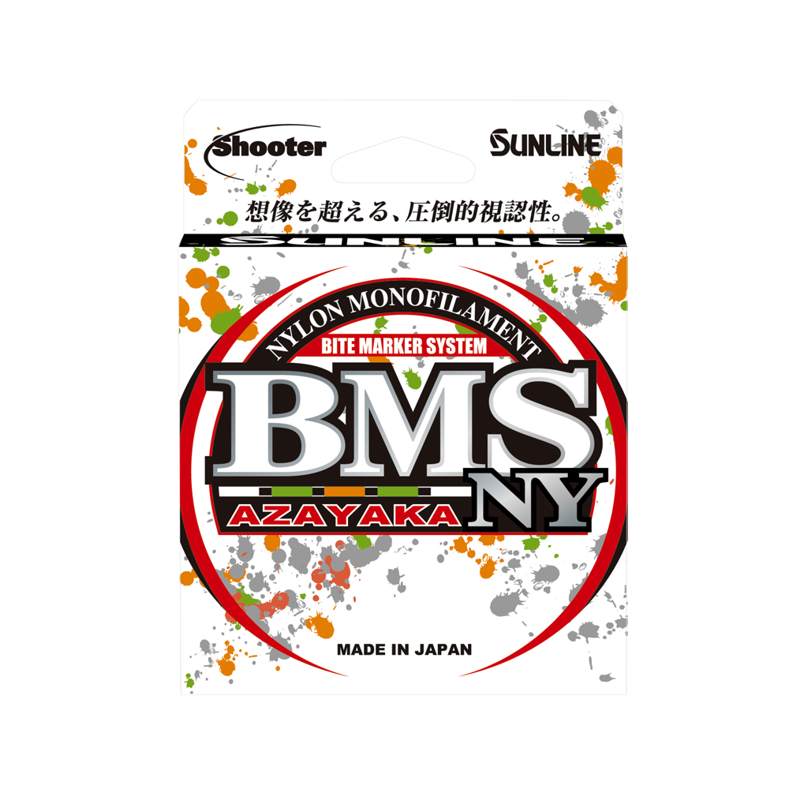

Sunline BMS Azayaka NY Monofilament
Diameter chart, reel capacity & backing guide

Shooter BMS Azayaka NY is the nylon member of Sunline's marked-line family. The current Japanese product uses a silk-white base with yellow-green, orange, and black markings in a two-meter cycle. Its 80-meter package is about 87.49 yards, not 80 yards and not the FC model's bulk option.
- Construction
- Nylon monofilament; two-meter Bite Marker System
- Listed strengths
- 4-20 lb
- Line type
- Monofilament main line
Is BMS Azayaka NY right for your setup?
Consider this line when watching a marked nylon mainline is part of your reaction-bait or topwater presentation. The visibility system is a product feature; it cannot guarantee bite detection. Plan the relatively short package against casting distance and future trimming before deciding on backing.
How much BMS Azayaka NY will fit?
Calculated estimates, not measured fills. Stop at the reel manufacturer's fill level even if some line remains.
Sunline Shooter BMS Azayaka NY diameter chart
Current JDM NY product-specific 80-meter table. Reference lb values retained; inches and yards explicitly converted from mm and meters.
| Strength | Inches | mm | Spools (m / yd) |
|---|---|---|---|
| 0.006496 | 0.165 | 80 m (about 87.49 yd) | |
| 0.00748 | 0.190 | 80 m (about 87.49 yd) | |
| 0.008071 | 0.205 | 80 m (about 87.49 yd) | |
| 0.009252 | 0.235 | 80 m (about 87.49 yd) | |
| 0.010236 | 0.260 | 80 m (about 87.49 yd) | |
| 0.01122 | 0.285 | 80 m (about 87.49 yd) | |
| 0.012205 | 0.310 | 80 m (about 87.49 yd) | |
| 0.012992 | 0.330 | 80 m (about 87.49 yd) | |
| 0.01378 | 0.350 | 80 m (about 87.49 yd) | |
| 0.014567 | 0.370 | 80 m (about 87.49 yd) |
Choosing your BMS Azayaka NY strength
The product-specific 5 lb entry is .190 mm. Do not replace it with .185 mm from a generic size chart: the exact NY product table is the evidence here.
At 10 lb the standard diameter is .260 mm; 20 lb is .370 mm. The package remains 80 meters as strength rises, but reel capacity does not.
NY means nylon. BMS Azayaka FC is fluorocarbon with a different marking cycle and package range; sharing a family name does not make its data interchangeable.
Specification-based guidance, not a hands-on BMS Azayaka NY test. Capacity results are estimates, not measured fills.
Want a guided recommendation?
Continue in the Setup WizardSame pound test, different diameters
At your selected strength
Loading diameter comparisons...
What changes with another line?
Nearby diameters in the line database
| Line | Strength | Inches | Difference |
|---|---|---|---|
| Loading line database... | |||
Backing, working line & leaders
Budget the 80 meters
A complete package provides about 87.49 yards before losses to knots and trimming. A long cast can consume a substantial part of that amount; check your required reserve first.
Use markings with context
The repeating two-meter color system aids observation. It is not a calibrated measurement of remaining spool capacity after pieces have been removed.
Keep the right suffix
Check NY on the package before winding. The FC product is a separate fluorocarbon, not another color of this nylon line.
How Much Fits on These Reels?
Estimated full-spool capacity for the BMS Azayaka NY strength selected above, with no backing. These are calculated examples, not physical tests or recommendations for every pairing.
Loading capacity estimates...
BMS Azayaka NY questions, answered
Can I select the 320-meter FC bulk spool for NY?
No. The verified NY product lists an 80-meter package. The FC model's bulk size is not evidence for NY.
Are the pound labels breaking-strength guarantees?
Sunline labels the values as reference strength in the Japanese product table. Actual results depend on conditions and knots.
Where do the inch values come from?
They are explicit conversions of Sunline's product-specific standard millimeter diameters. They are not separately measured or published inch values.
Specifications & sources
Checked 2026-09-13. All ten strengths tied to the NY product table and exact JAN suffixes. This is not the fluorocarbon BMS Azayaka FC chart.
Calculations use the catalog's listed inch diameters. Published inch and millimeter values may differ slightly because of rounding.
- Sunline official product evidence 1 Exact model identity and manufacturer specifications; reviewed 2026-09-13.